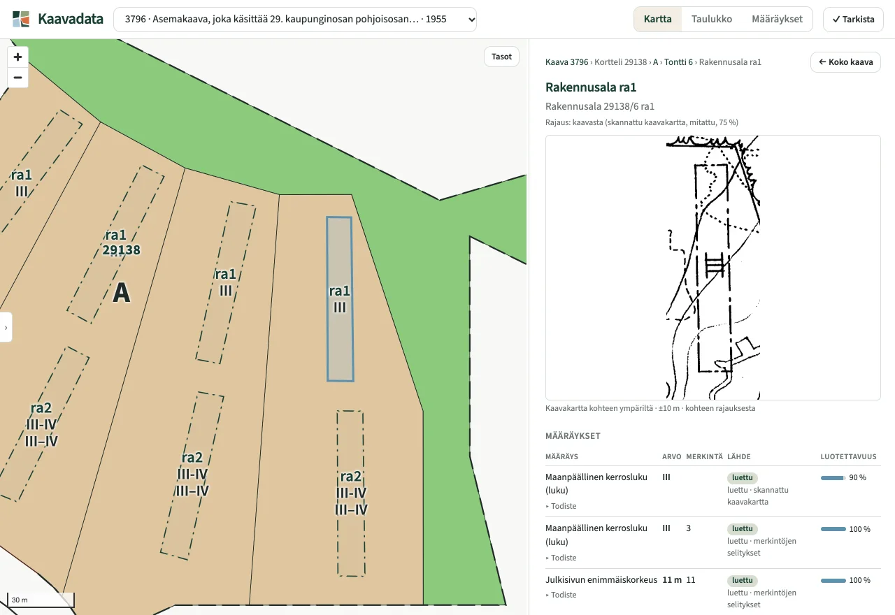

Vanhoista asemakaavoista rakenteista kaavatietoa.
Kaavadata muuntaa asemakaavan alkuperäisaineiston – skannatun kaavakartan, PDF:n tai CAD-aineiston – kansallisen kaavatietomallin mukaiseksi rakenteiseksi paikkatiedoksi, joka voidaan viedä Ryhti-järjestelmään.
Jokainen tulkinta voidaan jäljittää alkuperäiseen kaava-aineistoon.
Rakenteinen. Paikannettu. Ryhti-yhteensopiva.


Ryhti-yhteensopiva aineisto
Kaavadata tuottaa kaavakohteet ja kaavamääräykset kansallisen kaavatietomallin mukaisesti. Määräysten lajit ja koodiarvot noudattavat Ryhti-järjestelmän koodistoja, ja aineisto validoidaan Ryhdin rajapinnalla.